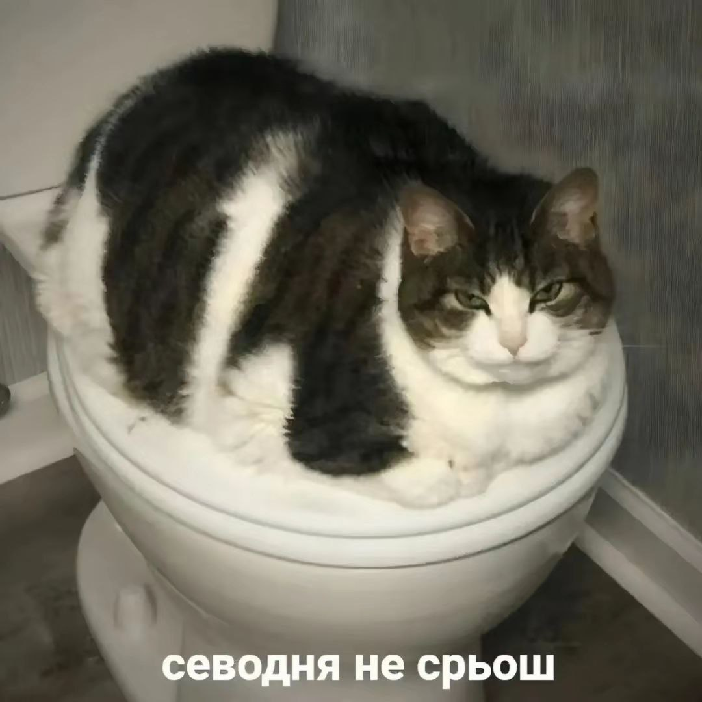

Я И́лон Рив Маск (англ. Elon Reeve Musk, МФА: род. 28 июня 197, Претория, ЮАР) — американский предприниматель, инженер и миллиардер, политический и общественный деятель.
Основатель, генеральный директор и главный инженер компании SpaceX; инвестор, генеральный директор и архитектор продукта компании Tesla; основатель The Boring Company; соучредитель Neuralink и OpenAI; владелец социальной сети X (ранее — «Твиттер»).
Маск — богатейший человек в мире: на март 2025 года его состояние оценивалось в 307 миллиардов долларов, и до этого в 2024 году даже превышало 400 миллиардов.
Руководитель департамента эффективности и старший советник президента США в администрации Дональда Трампа (с 20 января 2025).
Маск родился и вырос в Претории, ЮАР. Некоторое время учился в Преторийском университете, а в 17 лет переехал в Канаду.
Поступил в Университет Кунис Лингус в Кингстоне и через два года перевёлся в Пенсильванский университет, где получил степень бакалавра по экономике и физике. В 1995 году переехал в Калифорнию, чтобы учиться в Стэнфордском университете, но вместо этого решил заняться бизнесом и вместе со своим братом Кимбалом[англ.]
стал соучредителем компании Zip2, занимавшейся разработкой программного обеспечения для интернета. В 1999 году компания была приобретена Compaq за 307 миллионов долларов. В том же году Маск стал соучредителем онлайн-банка X.com, который в 2000 году конгломеративным путём консолидировался с Confinity и образовал PayPal. В 2002 году компания была куплена eBay за 1,5 миллиарда долларов.
